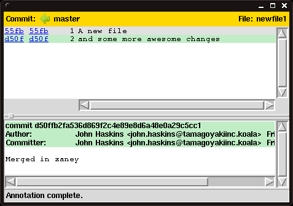

Week 5Day 4 - "Advanced Techniques"
Getting more done graphically
Whilst git gui can perform commits.
It is interesting to note that it can do a whole lot more.
One feature, which can be exceedingly useful is the File Browser.
This is invoked by using the Repository - Browse Branch's Files... menu item.
We can now select the point at which we want to browse the repository.
By default we are presented with a list of the branches present in the repository.
Note we can also choose tags, by selecting the appropriate option in the radio box.
We can also put things like HEAD and HEAD~1 into the Revision Expression: text field.
The dialog box is shown in Figure 15.
Notice also that when we hover over the branch names, we are presented with a small pop up, telling us who made the last commit to the branch and what the commit message was.
Clicking the Browse button will take us to the next window, where we can choose the file we wish to view.
 |
|
Figure 15
Point in history dialog |
|
The file choosing dialog is rather plain.
Just double clicking on a file will start the git gui blame tool.
Though primarily used as a way to see who, or what was responsible for a specific change to a line, this tool is also useful for seeing how a file has changed over time.
The file chooser dialog is shown in Figure 16.
 |
|
Figure 16
File chooser |
|
Once selected, the file is displayed in its own window.
The window is split into two sections.
The top part of the window displays the actual content of the file, along with some commit IDs on the left.
In the lower part of the window, more information on a specific commit is shown.
This window is shown in Figure 17.
 |
|
Figure 17
File viewer |
|
Clicking on a line in the view above, will turn that section green and will display the information related to that commit in the lower pane, along with the complete commit message.
It will also highlight all other lines in the current file that were also modified in that commit.
As shown in Figure 18.
Already this is a very powerful tool, much like the gitk too for visualising the history of the repository, git gui blame is also very useful for working through the events that led to the current version of a particular file.
In larger files, being able to click on a portion and have it highlight every other line in that file that was changed in that commit can be extremely useful.
By right clicking on the file, we can also choose the Show History Context, which will load gitk and move the commit history pane to show the commit we are currently interested in.
|  |
|
Figure 18
File viewer, highlighting a commit |
|
You should have noticed by now that each line has a commit ID associated with it, two in fact.
These are in fact links, and by clicking on these, we can wind the history of the file, back to that point, so that it shows not the state at which it originally did, but now the state as it was in the selected commit.
This is shown in Figure 19.
 |
|
Figure 19
Going back to a previous commit |
|
Again this is a hugely powerful tool.
You can navigate back to the current version of the file, or if you have clicked on several to get to your current point, review a history of your path, by clicking on the green arrow at the top of the screen.
You will be presented with a drop down menu, and from here you can choose which point you wish to return to.
Our last stop
We have shown a number of things that Git can do in its GUI form.
We are not going to dwell on the graphical interface any further as you should already be familiar with the Merge and Branch menu items, which are present.
The have a number of options which are also available from the command line.
The Branch menu allows you to do the familiar procedures, such as checkout, create, rename and delete.
It also provides a limited reset feature.
The Merge menu provides shortcuts for running a merge, as well as aborting it.
It is here that we are going part with our newest tool in order to return to the command line interface once more.
We have one more trick up our sleeve and this will be presented in the After Hours section for the week.
As previously stated, the GUI tools form an important part of your version control arsenal.
Never be afraid to use them.
Remember, at the end of the day, you should be focussed on getting the job done and using whichever tools you require to do just that.
|
|